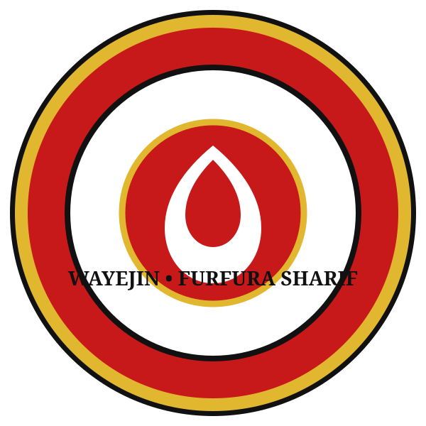

গাড়ির পিছনের কাঁচের ভিতরে লাগানোর স্টিকার এক লাইনে WEST BENGAL ULAMA BOARD, নিচে WAYEJIN E FURFURA SHARIF এবং OFFICIAL MEMBER। সাদামাটা, কম লেখা ও আগের লাল-নীল-হলুদ রং রাখা হয়েছে।

WEST BENGAL ULAMA BOARD
WAYEJIN E FURFURA SHARIF
OFFICIAL MEMBER
প্রতি স্টিকার: ৯ × ৬ ইঞ্চি • ৩০০ DPI
১৮ × ১২ ইঞ্চি কাগজে ২ × ২ বিন্যাসে মোট ৪টি স্টিকার প্রিন্ট হবে। প্রিন্ট করার সময় Actual Size / 100% রাখুন। সাধারণ প্রিন্টারের কাগজে নয়—কাঁচের ভিতরে লাগানোর উপযোগী transparent reverse-print vinyl ব্যবহার করুন।